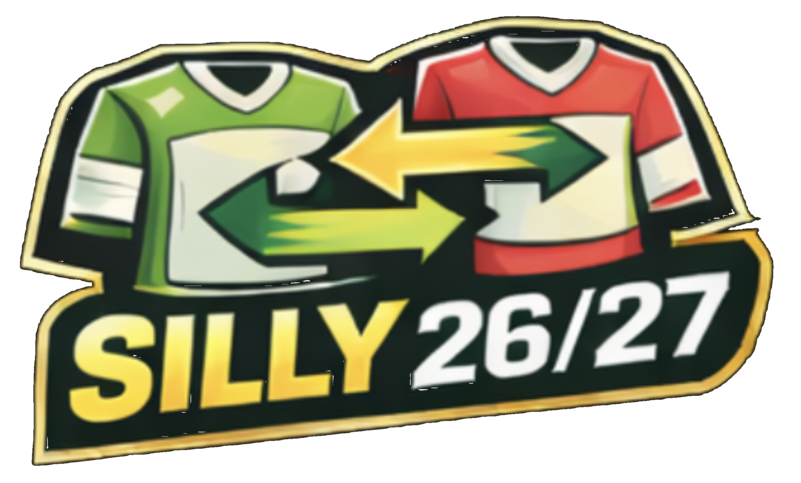

Live sport i en hall nära dig
Se vilka matcher som spelas på din ort idag. Tjänsten är live för hockey i hela Sverige sedan säsongen 2025/2026.
- Sortera på avstånd till ishallen
- Sortera på seriens vikt
- Filtrera på favoritserier
LocalSport.se hjälper dig hitta sport nära dig – och ger dig dessutom hockey highlights och silly season i svenska ligor.
Se vilka matcher som spelas på din ort idag. Tjänsten är live för hockey i hela Sverige sedan säsongen 2025/2026.
Aktuella highlightsklipp från de större hockeyligorna i världen och Sverige.

Följ lagbyggen, spelarövergångar och status i svenska hockeyserier – med tyngdpunkt på Sverige, väst, syd och utvalda ungdomsserier.
LocalSport.se visar sport som spelas lokalt i Sverige. Vi har startat med hockey där vi idag har nationell täckning.
På sikt kan fler sporter tillkomma, till exempel innebandy, handboll, basket, bandy och fotboll. Nästa tänkbara steg är fotboll i Göteborgsregionen, men fokus just nu är att utveckla och förfina hockeytjänsterna.
Första mockup: denna sektion är bara en plats för framtida inställningar, till exempel favoritserier, sortering och standardval.